Background

I’ve always found it a bit of a pain to explore and choose from all the different themes available out there for {ggplot2}.
Yes I know, I know - there are probably tons of websites out there with a ggplot theme gallery which I can Google,1 but it’s always more fun if you can create your own. So here’s my attempt to do this, on a lockdown Bank Holiday afternoon.
DIY ggplot theme gallery 📊
1. Start with a list of plots and a list of themes
The outcome I want to achieve from this is to create something that would make it easier to decide which ggplot theme to pick for the visualisation at hand. The solution doesn’t need to be fancy: it would be helpful enough to generate all the combinations of plot types X themes, so I can browse through them and get inspirations more easily.
I took a leaf out of Shayne Lynn’s book/blog and created a couple of “base plots” using iris (yes, boring, but it works). I did these for four types of plots:
- scatter plot
- bar plot
- box plot
- density plot
I then assigned these four plots into a list object called plot_list, and converted them into a tibble (plot_base) that I could use for joining afterwards.
This step is then repeated for themes, where I virtually punched in all the existing themes in {ggplot2} and {ggthemes} into a named list (theme_list), and also create a tibble (theme_base). You can make this list as long and exhaustive as you want, but for this example I didn’t want to go into overkill.
You’ll see that I’ve made the names quite elaborate in terms of specifying the package source. The reason for this is because these names will be used afterwards in the plot output, and it will be helpful for identifying the function for generating the theme in the gallery.
#### Load packages ####
library(tidyverse)
library(ggthemes) # Optional - only for testing additional themes
#### Create base plots ####
## scatter plot
point_plot <-
ggplot(iris, aes(x=jitter(Sepal.Width),
y=jitter(Sepal.Length),
col=Species)) +
geom_point() +
labs(x="Sepal Width (cm)",
y="Sepal Length (cm)",
col="Species",
title="Iris Dataset - Scatter plot")
## bar plot
bar_plot <-
iris %>%
group_by(Species) %>%
summarise(Sepal.Width = mean(Sepal.Width)) %>%
ggplot(aes(x=Species, y=Sepal.Width, fill=Species)) +
geom_col() +
labs(x="Species",
y="Mean Sepal Width (cm)",
fill="Species",
title="Iris Dataset - Bar plot")
## box plot
box_plot <- ggplot(iris,
aes(x=Species,
y=Sepal.Width,
fill=Species)) +
geom_boxplot() +
labs(x="Species",
y="Sepal Width (cm)",
fill="Species",
title="Iris Dataset - Box plot")
## density plot
density_plot <-
iris %>%
ggplot(aes(x = Sepal.Length, fill = Species)) +
geom_density() +
facet_wrap(.~Species) +
labs(x="Sepal Length (cm)",
y="Density",
fill="Species",
title="Iris Dataset - Density plot")
#### Create iteration table ####
## Put all base plots in a list
plot_list <-
list("bar plot" = bar_plot,
"box plot" = box_plot,
"scatter plot" = point_plot,
"density plot" = density_plot)
## Convert list into a tibble
plot_base <-
tibble(plot = plot_list,
plot_names = names(plot_list))
## Put all themes to test in a named list
## names will be fed into subtitles
theme_list <-
list("ggplot2::theme_minimal()" = theme_minimal(),
"ggplot2::theme_classic()" = theme_classic(),
"ggplot2::theme_bw()" = theme_bw(),
"ggplot2::theme_gray()" = theme_gray(),
"ggplot2::theme_linedraw()" = theme_linedraw(),
"ggplot2::theme_light()" = theme_light(),
"ggplot2::theme_dark()" = theme_dark(),
"ggthemes::theme_economist()" = ggthemes::theme_economist(),
"ggthemes::theme_economist_white()" = ggthemes::theme_economist_white(),
"ggthemes::theme_calc()" = ggthemes::theme_calc(),
"ggthemes::theme_clean()" = ggthemes::theme_clean(),
"ggthemes::theme_excel()" = ggthemes::theme_excel(),
"ggthemes::theme_excel_new()" = ggthemes::theme_excel_new(),
"ggthemes::theme_few()" = ggthemes::theme_few(),
"ggthemes::theme_fivethirtyeight()" = ggthemes::theme_fivethirtyeight(),
"ggthemes::theme_foundation()" = ggthemes::theme_foundation(),
"ggthemes::theme_gdocs()" = ggthemes::theme_gdocs(),
"ggthemes::theme_hc()" = ggthemes::theme_hc(),
"ggthemes::theme_igray()" = ggthemes::theme_igray(),
"ggthemes::theme_solarized()" = ggthemes::theme_solarized(),
"ggthemes::theme_solarized_2()" = ggthemes::theme_solarized_2(),
"ggthemes::theme_solid()" = ggthemes::theme_solid(),
"ggthemes::theme_stata()" = ggthemes::theme_stata(),
"ggthemes::theme_tufte()" = ggthemes::theme_tufte(),
"ggthemes::theme_wsj()" = ggthemes::theme_wsj())
## Convert list into a tibble
theme_base <-
tibble(theme = theme_list,
theme_names = names(theme_list))
plot_base## # A tibble: 4 x 2
## plot plot_names
## <named list> <chr>
## 1 <gg> bar plot
## 2 <gg> box plot
## 3 <gg> scatter plot
## 4 <gg> density plot## # A tibble: 25 x 2
## theme theme_names
## <named list> <chr>
## 1 <theme> ggplot2::theme_minimal()
## 2 <theme> ggplot2::theme_classic()
## 3 <theme> ggplot2::theme_bw()
## 4 <theme> ggplot2::theme_gray()
## 5 <theme> ggplot2::theme_linedraw()
## 6 <theme> ggplot2::theme_light()
## 7 <theme> ggplot2::theme_dark()
## 8 <theme> ggthemes::theme_economist()
## 9 <theme> ggthemes::theme_economist_white()
## 10 <theme> ggthemes::theme_calc()
## # ... with 15 more rows2. Create an iteration table
The next step is to create what I call an iteration table. Here I use tidyr::expand_grid(), which creates a tibble from all combinations of inputs. Actually you can use either tidyr::expand_grid() or the base function expand.grid(), but I like the fact that the former returns a tibble rather than a data frame.
The output is all_combos, which is a two column tibble with all combinations of theme_names and plot_names, as character vectors. I then use left_join() twice to bring in the themes and the base plots:
## Create an iteration data frame
## Use `expand_grid()` to generate all combinations
## of themes and plots
all_combos <-
expand_grid(plot_names = plot_base$plot_names,
theme_names = theme_base$theme_names)
iter_df <-
all_combos %>%
left_join(plot_base, by = "plot_names") %>%
left_join(theme_base, by = "theme_names") %>%
select(theme_names, theme, plot_names, plot) # Reorder columns
iter_df## # A tibble: 100 x 4
## theme_names theme plot_names plot
## <chr> <list> <chr> <list>
## 1 ggplot2::theme_minimal() <theme> bar plot <gg>
## 2 ggplot2::theme_classic() <theme> bar plot <gg>
## 3 ggplot2::theme_bw() <theme> bar plot <gg>
## 4 ggplot2::theme_gray() <theme> bar plot <gg>
## 5 ggplot2::theme_linedraw() <theme> bar plot <gg>
## 6 ggplot2::theme_light() <theme> bar plot <gg>
## 7 ggplot2::theme_dark() <theme> bar plot <gg>
## 8 ggthemes::theme_economist() <theme> bar plot <gg>
## 9 ggthemes::theme_economist_white() <theme> bar plot <gg>
## 10 ggthemes::theme_calc() <theme> bar plot <gg>
## # ... with 90 more rows3. Run your ggplot gallery!
The final step is to create the ggplot “gallery”.
I used purrr::pmap() on iter_df, which applies a function to each column, using the values in each column as inputs to the arguments of the function. You will see that:
iter_labelis ultimately used as the names for the list of plots (plot_gallery).labelwithin the function is used for populating the subtitles of the plotsoutput_plotis the plot that is created within the function
#### Run plots ####
## Use `pmap()` to run all the plots-theme combinations
## Create labels to be used as names for `plot_gallery`
iter_label <-
paste0("Theme: ",
iter_df$theme_names,
"; Plot type: ",
iter_df$plot_names)
## Create a list of plots
plot_gallery <-
iter_df %>%
pmap(function(theme_names, theme, plot_names, plot){
label <-
paste0("Theme: ",
theme_names,
"\nPlot type: ",
plot_names)
output_plot <-
plot +
theme +
labs(subtitle = label)
return(output_plot)
}) %>%
set_names(iter_label)
plot_gallery## $`Theme: ggplot2::theme_minimal(); Plot type: bar plot`
##
## $`Theme: ggplot2::theme_classic(); Plot type: bar plot`##
## $`Theme: ggplot2::theme_bw(); Plot type: bar plot`
##
## $`Theme: ggplot2::theme_gray(); Plot type: bar plot`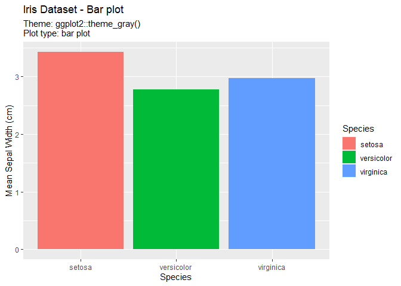
##
## $`Theme: ggplot2::theme_linedraw(); Plot type: bar plot`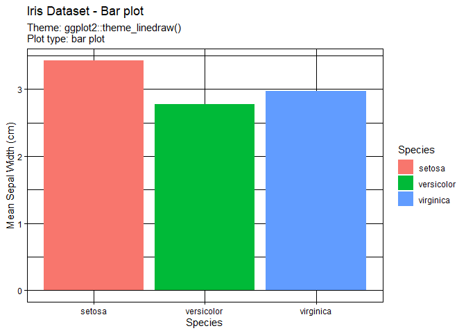
##
## $`Theme: ggplot2::theme_light(); Plot type: bar plot`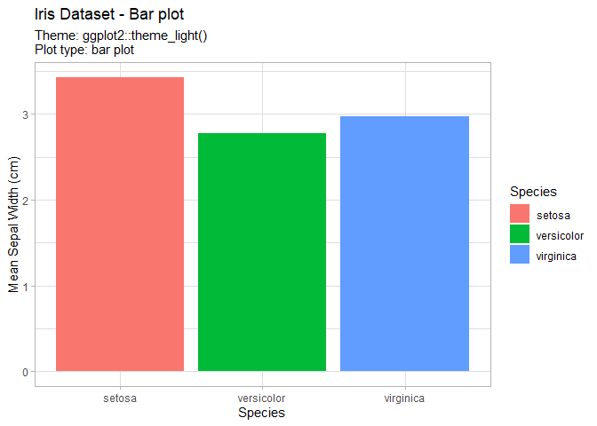
##
## $`Theme: ggplot2::theme_dark(); Plot type: bar plot`
##
## $`Theme: ggthemes::theme_economist(); Plot type: bar plot`
##
## $`Theme: ggthemes::theme_economist_white(); Plot type: bar plot`
##
## $`Theme: ggthemes::theme_calc(); Plot type: bar plot`
##
## $`Theme: ggthemes::theme_clean(); Plot type: bar plot`
##
## $`Theme: ggthemes::theme_excel(); Plot type: bar plot`
##
## $`Theme: ggthemes::theme_excel_new(); Plot type: bar plot`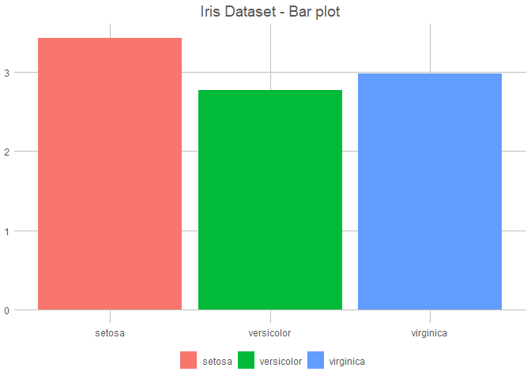
##
## $`Theme: ggthemes::theme_few(); Plot type: bar plot`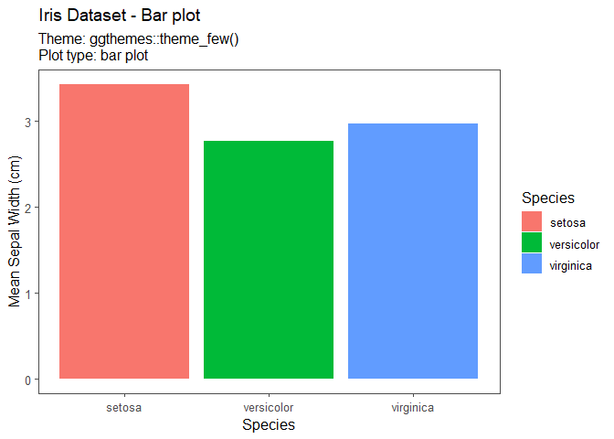
##
## $`Theme: ggthemes::theme_fivethirtyeight(); Plot type: bar plot`
##
## $`Theme: ggthemes::theme_foundation(); Plot type: bar plot`
##
## $`Theme: ggthemes::theme_gdocs(); Plot type: bar plot`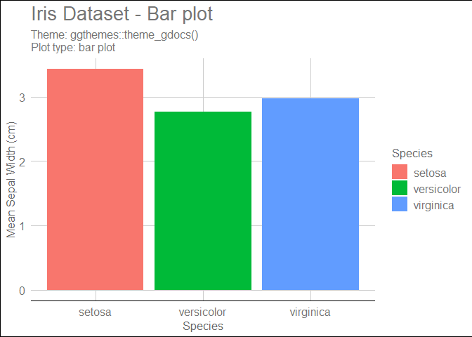
##
## $`Theme: ggthemes::theme_hc(); Plot type: bar plot`
##
## $`Theme: ggthemes::theme_igray(); Plot type: bar plot`
##
## $`Theme: ggthemes::theme_solarized(); Plot type: bar plot`
##
## $`Theme: ggthemes::theme_solarized_2(); Plot type: bar plot`
##
## $`Theme: ggthemes::theme_solid(); Plot type: bar plot`
##
## $`Theme: ggthemes::theme_stata(); Plot type: bar plot`
##
## $`Theme: ggthemes::theme_tufte(); Plot type: bar plot`
##
## $`Theme: ggthemes::theme_wsj(); Plot type: bar plot`
##
## $`Theme: ggplot2::theme_minimal(); Plot type: box plot`
##
## $`Theme: ggplot2::theme_classic(); Plot type: box plot`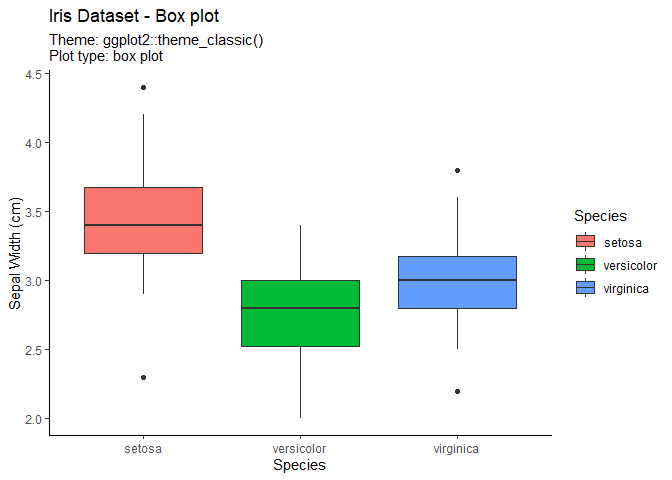
##
## $`Theme: ggplot2::theme_bw(); Plot type: box plot`
##
## $`Theme: ggplot2::theme_gray(); Plot type: box plot`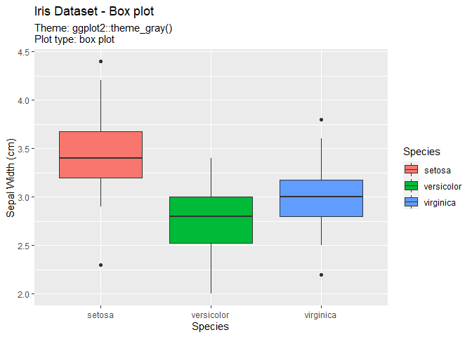
##
## $`Theme: ggplot2::theme_linedraw(); Plot type: box plot`
##
## $`Theme: ggplot2::theme_light(); Plot type: box plot`
##
## $`Theme: ggplot2::theme_dark(); Plot type: box plot`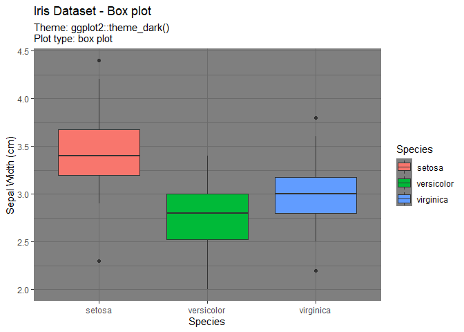
##
## $`Theme: ggthemes::theme_economist(); Plot type: box plot`
##
## $`Theme: ggthemes::theme_economist_white(); Plot type: box plot`
##
## $`Theme: ggthemes::theme_calc(); Plot type: box plot`
##
## $`Theme: ggthemes::theme_clean(); Plot type: box plot`
##
## $`Theme: ggthemes::theme_excel(); Plot type: box plot`
##
## $`Theme: ggthemes::theme_excel_new(); Plot type: box plot`
##
## $`Theme: ggthemes::theme_few(); Plot type: box plot`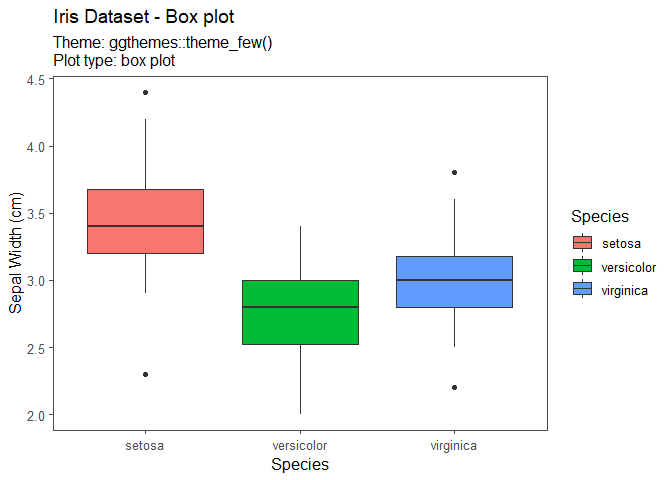
##
## $`Theme: ggthemes::theme_fivethirtyeight(); Plot type: box plot`
##
## $`Theme: ggthemes::theme_foundation(); Plot type: box plot`
##
## $`Theme: ggthemes::theme_gdocs(); Plot type: box plot`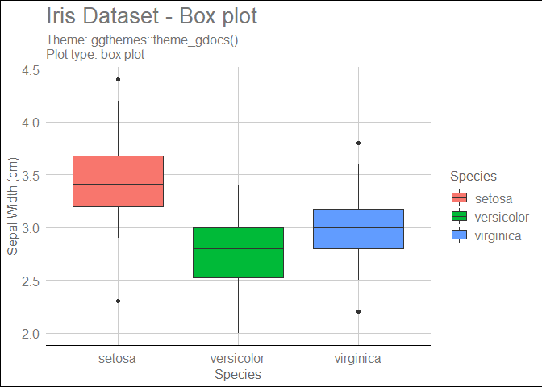
##
## $`Theme: ggthemes::theme_hc(); Plot type: box plot`
##
## $`Theme: ggthemes::theme_igray(); Plot type: box plot`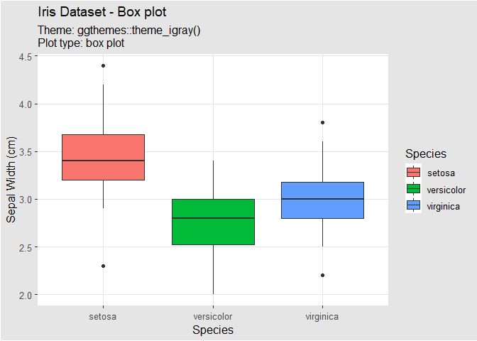
##
## $`Theme: ggthemes::theme_solarized(); Plot type: box plot`
##
## $`Theme: ggthemes::theme_solarized_2(); Plot type: box plot`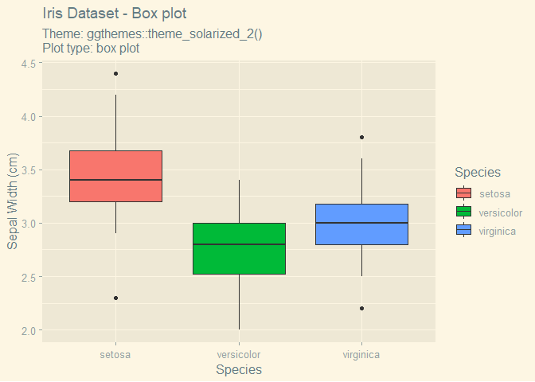
##
## $`Theme: ggthemes::theme_solid(); Plot type: box plot`
##
## $`Theme: ggthemes::theme_stata(); Plot type: box plot`
##
## $`Theme: ggthemes::theme_tufte(); Plot type: box plot`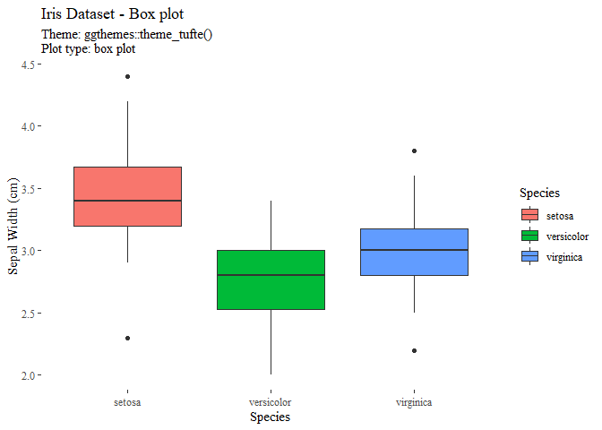
##
## $`Theme: ggthemes::theme_wsj(); Plot type: box plot`
##
## $`Theme: ggplot2::theme_minimal(); Plot type: scatter plot`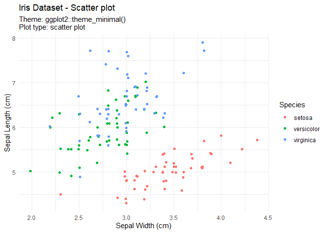
##
## $`Theme: ggplot2::theme_classic(); Plot type: scatter plot`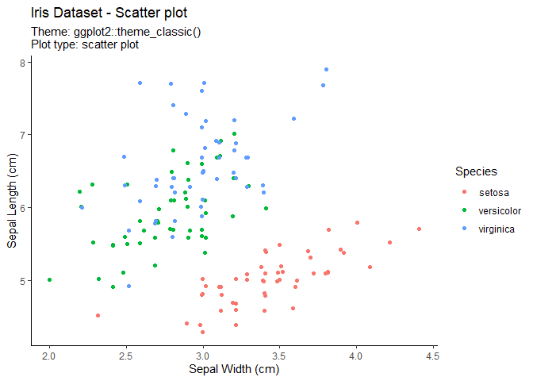
##
## $`Theme: ggplot2::theme_bw(); Plot type: scatter plot`
##
## $`Theme: ggplot2::theme_gray(); Plot type: scatter plot`
##
## $`Theme: ggplot2::theme_linedraw(); Plot type: scatter plot`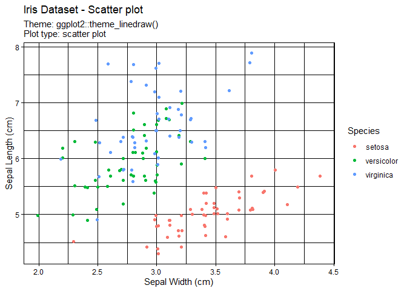
##
## $`Theme: ggplot2::theme_light(); Plot type: scatter plot`
##
## $`Theme: ggplot2::theme_dark(); Plot type: scatter plot`
##
## $`Theme: ggthemes::theme_economist(); Plot type: scatter plot`
##
## $`Theme: ggthemes::theme_economist_white(); Plot type: scatter plot`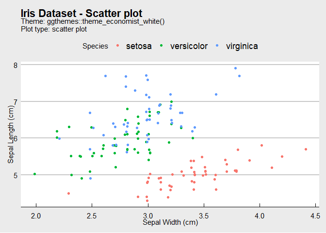
##
## $`Theme: ggthemes::theme_calc(); Plot type: scatter plot`
##
## $`Theme: ggthemes::theme_clean(); Plot type: scatter plot`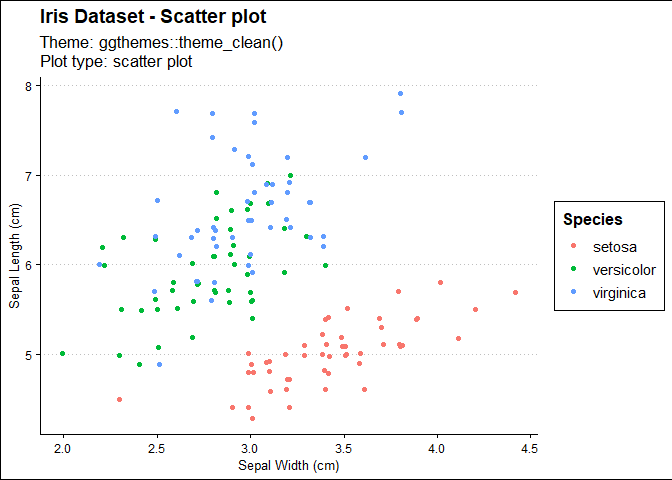
##
## $`Theme: ggthemes::theme_excel(); Plot type: scatter plot`
##
## $`Theme: ggthemes::theme_excel_new(); Plot type: scatter plot`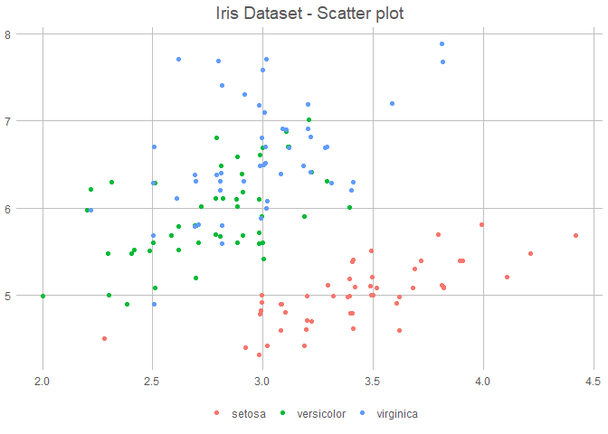
##
## $`Theme: ggthemes::theme_few(); Plot type: scatter plot`
##
## $`Theme: ggthemes::theme_fivethirtyeight(); Plot type: scatter plot`
##
## $`Theme: ggthemes::theme_foundation(); Plot type: scatter plot`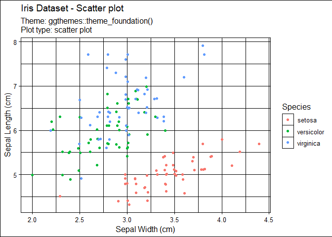
##
## $`Theme: ggthemes::theme_gdocs(); Plot type: scatter plot`
##
## $`Theme: ggthemes::theme_hc(); Plot type: scatter plot`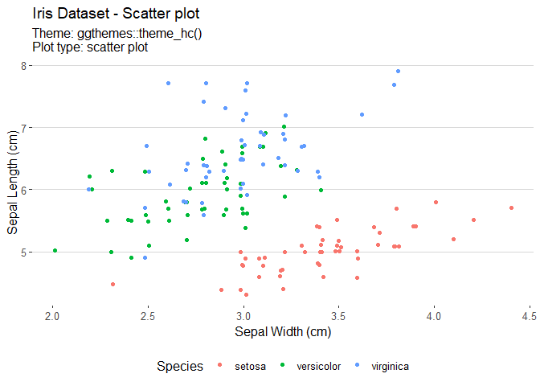
##
## $`Theme: ggthemes::theme_igray(); Plot type: scatter plot`
##
## $`Theme: ggthemes::theme_solarized(); Plot type: scatter plot`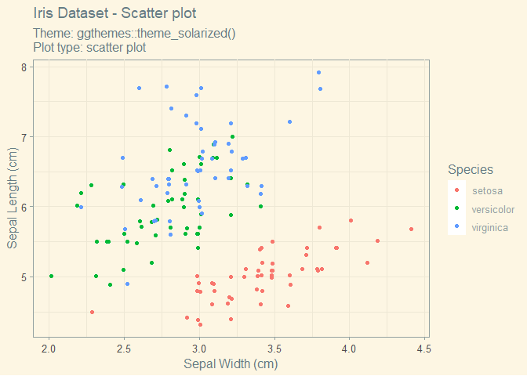
##
## $`Theme: ggthemes::theme_solarized_2(); Plot type: scatter plot`
##
## $`Theme: ggthemes::theme_solid(); Plot type: scatter plot`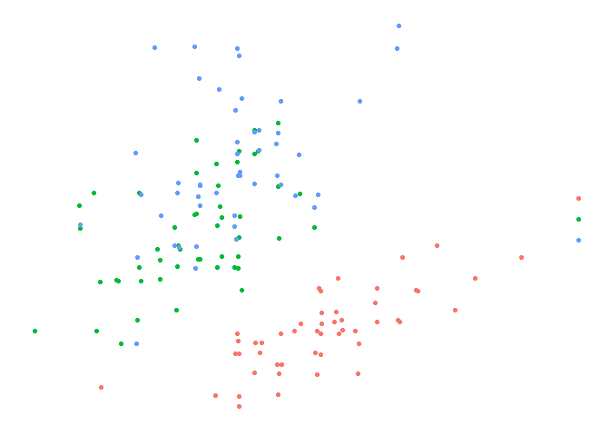
##
## $`Theme: ggthemes::theme_stata(); Plot type: scatter plot`
##
## $`Theme: ggthemes::theme_tufte(); Plot type: scatter plot`
##
## $`Theme: ggthemes::theme_wsj(); Plot type: scatter plot`
##
## $`Theme: ggplot2::theme_minimal(); Plot type: density plot`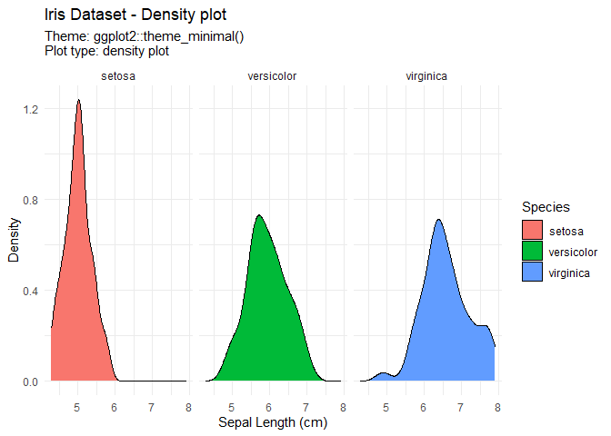
##
## $`Theme: ggplot2::theme_classic(); Plot type: density plot`
##
## $`Theme: ggplot2::theme_bw(); Plot type: density plot`
##
## $`Theme: ggplot2::theme_gray(); Plot type: density plot`
##
## $`Theme: ggplot2::theme_linedraw(); Plot type: density plot`
##
## $`Theme: ggplot2::theme_light(); Plot type: density plot`
##
## $`Theme: ggplot2::theme_dark(); Plot type: density plot`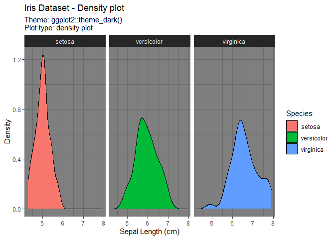
##
## $`Theme: ggthemes::theme_economist(); Plot type: density plot`
##
## $`Theme: ggthemes::theme_economist_white(); Plot type: density plot`
##
## $`Theme: ggthemes::theme_calc(); Plot type: density plot`
##
## $`Theme: ggthemes::theme_clean(); Plot type: density plot`
##
## $`Theme: ggthemes::theme_excel(); Plot type: density plot`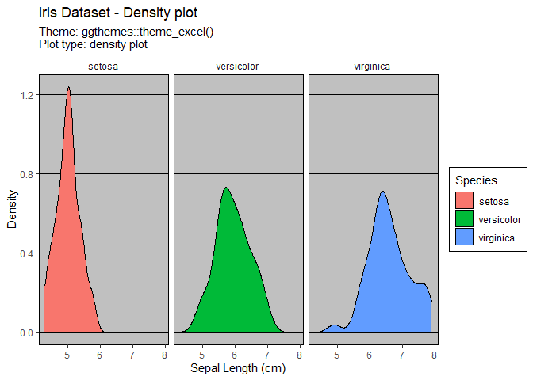
##
## $`Theme: ggthemes::theme_excel_new(); Plot type: density plot`
##
## $`Theme: ggthemes::theme_few(); Plot type: density plot`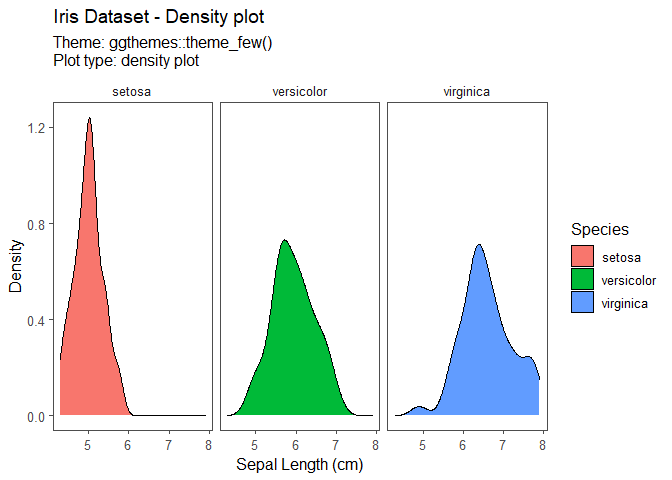
##
## $`Theme: ggthemes::theme_fivethirtyeight(); Plot type: density plot`
##
## $`Theme: ggthemes::theme_foundation(); Plot type: density plot`
##
## $`Theme: ggthemes::theme_gdocs(); Plot type: density plot`
##
## $`Theme: ggthemes::theme_hc(); Plot type: density plot`
##
## $`Theme: ggthemes::theme_igray(); Plot type: density plot`
##
## $`Theme: ggthemes::theme_solarized(); Plot type: density plot`
##
## $`Theme: ggthemes::theme_solarized_2(); Plot type: density plot`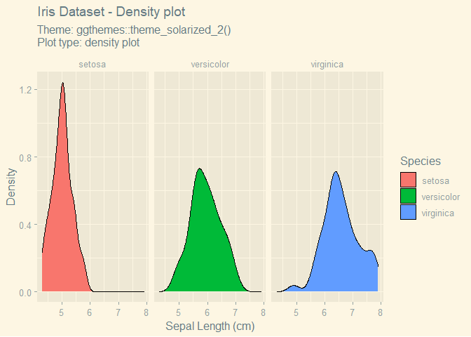
##
## $`Theme: ggthemes::theme_solid(); Plot type: density plot`
##
## $`Theme: ggthemes::theme_stata(); Plot type: density plot`
##
## $`Theme: ggthemes::theme_tufte(); Plot type: density plot`
##
## $`Theme: ggthemes::theme_wsj(); Plot type: density plot`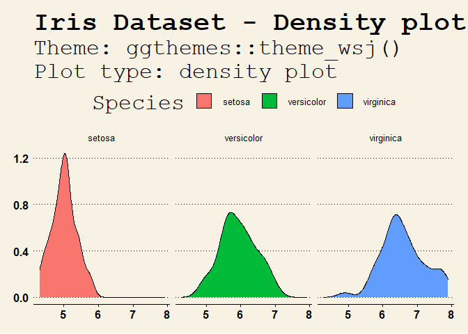
End Notes
And here it is! That didn’t take that many lines of code, but you can already generate a great number of plots with expand_grid() and pmap().
I should also caveat that this is by no means a “pretty” gallery; it’s very much a minimal implementation, but is good enough for my own consumption.